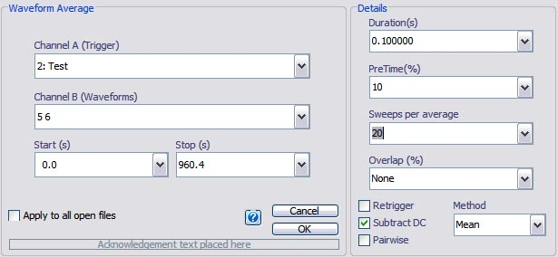
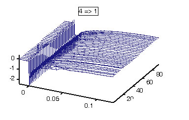

Email: sigtool@kcl.ac.uk
Author: Malcolm Lidierth
Updated: July 2008
It is assumed that equal numbers of valid triggers have been delivered at each of a series of points along an electrode track. Waveforms will be averaged at each point about a specified trigger times. The one-dimensional current source density is then estimated using the MATLAB del2 function:
CSDt=-del2(ut, loc)/4
where
ut is the vector of values from each average along the track at time t
and
loc is a scalar indicating the inter-recording distance or a vector of recording coordinates along the track.
CSD builds to a matrix containing the current source density at each point and time. For details of the del2 algorithm and how it deals with the data end-points see the MATLAB help.

Channel A (Trigger)
Select one or more channels to use as the trigger. Event and episodically sampled waveform channels can both serve as trigger channels. If a waveform channel is used for triggering and it does not contain explicit trigger times, the start of sampling will be used.
If Event/Epoch Filtering is active, only valid triggers will be used in the averaging process.
Channel B (Waveforms)
Select one or more waveform channels to average. Both continuous and episodically sampled waveforms may be selected. With episodic data, note that only valid epochs will contribute to the average. Ordinarily, Event Filtering should be applied to the trigger channels (as above) rather than to the waveform channels.
Note that, for multiplexed data, waveform averaging respects the Current Subchannel setting for each waveform channel. Only data on the relevant channel will be averaged.
Start & Stop
Only data between the specified times will be processed.
Duration & PreTime
These set the time over which the average will be calculated and the pre-stimulus time as a percentage of the duration. When the Channel B selection is made, a suggested duration will appear in in the Duration box calculated from the first trigger channel selected in Channel A and the waveforms channels in Channel B. Subsequently, the duration will be calculated individually for each trigger/waveform pair as the averages are formed. If the user-set duration exceeds the maximum possible, the duration for that channel pair will be reduced accordingly.
Note that if a waveform channel is used as the trigger and it does not contain explicit trigger times the start of sampling for each epoch will be used as the trigger. It follows, that no pre-time data will be available for that channel (or others sampled synchronously with it).
Sweeps per Average
Select 'All' to calculate a single average over the period Start to Stop. Otherwise, select the number of sweeps to include in each average to compute multiple averages for each trigger/waveform pair.

Example of multiple averages displayed here as a 'Waterfall' in the sigTOOL result window.
The CSD will be estimated from the 2nd derivative of the values along the y-axis.
Spacing
Specify a single value if the data were collected at equidistant intervals (default=1). Otherwise specify the individual coordinates e.g. 0 10 20 50 75 100.
Values should be given in µm.
Method
You can selected mean (default) or median averaging.
If this checkbox is set, all triggers will be used - including those that fall within the sweep-time of the preceding trigger(s).
If the box is not checked, triggers that fall within the sweep-time of an earlier sweep will be rejected. This can be used, for example, to 'debounce' trigger channels where trains of stimuli were delivered.
The average (either mean or median) of the pretrigger values will be subtracted from the averaged trace
© The Author and King's College London, 2008-